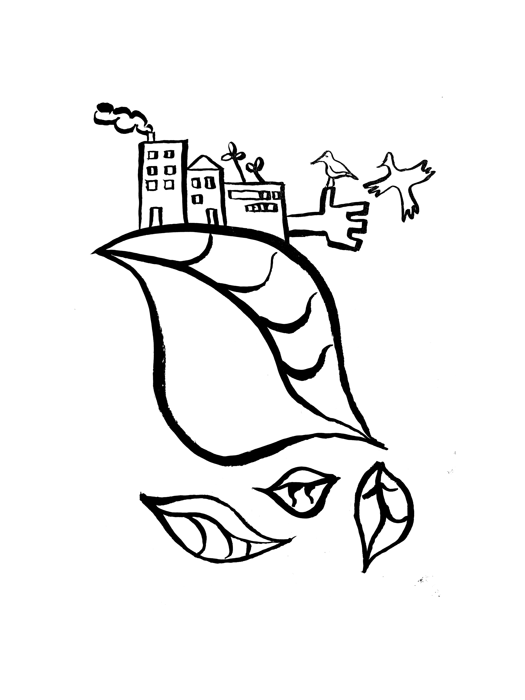

Paluu Suomeen oli kuin ankara tuulenpuuska, joka ei päästänyt otteestaan.
Pari kuukautta ilmavirtaus vei holtittomasti minne tahtoi.
Lopulta olosuhteet lempenivät, ja leuto myötätuuli alkoi puhaltaa. Myrskyn ja myötätuulen jaksot seuraavat erottomattomasti toisiansa.